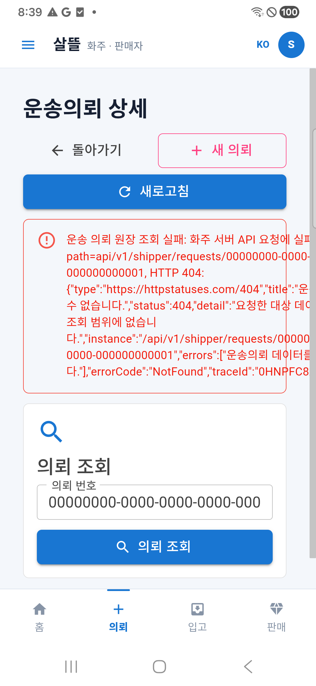
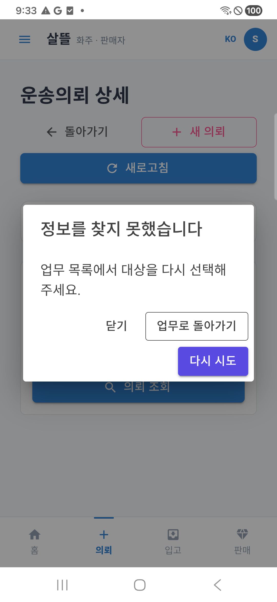
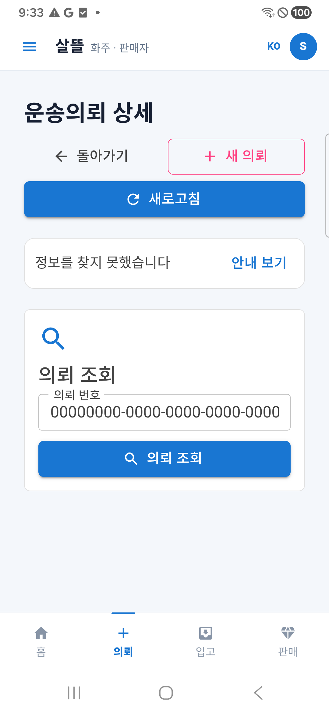
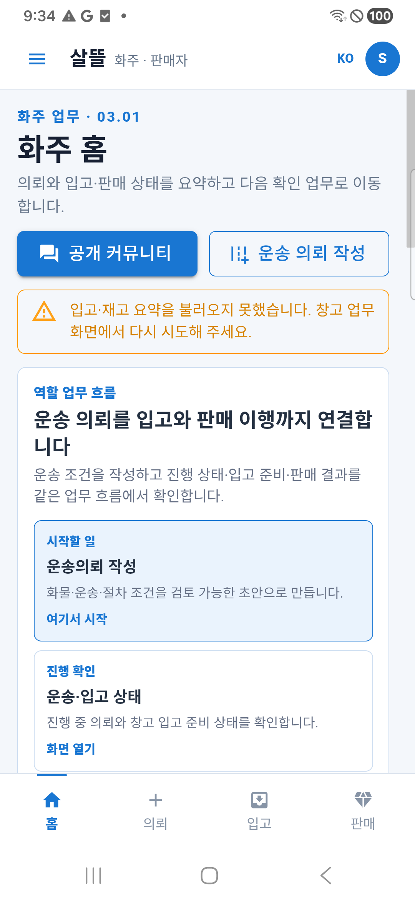
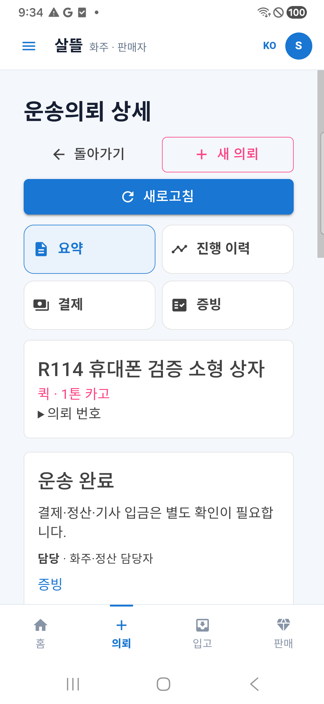
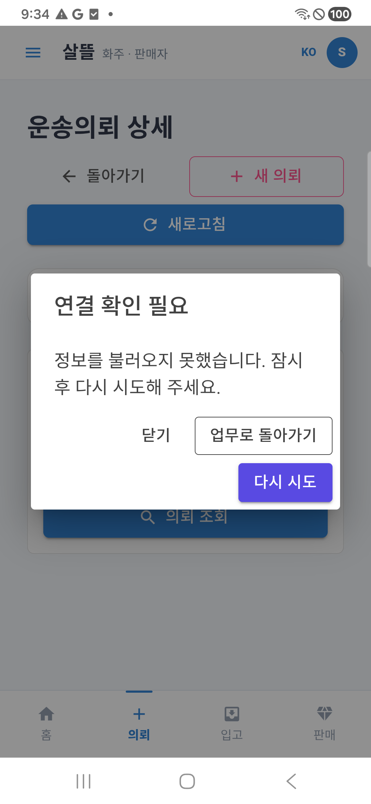
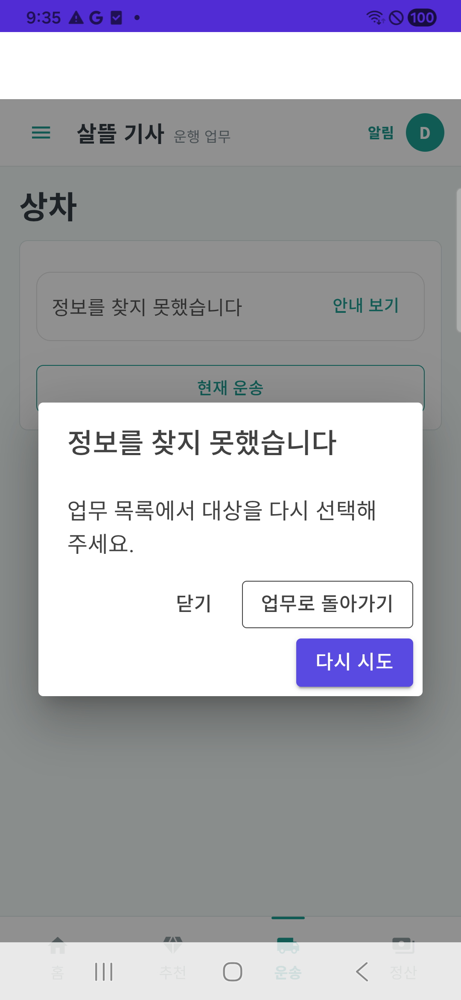
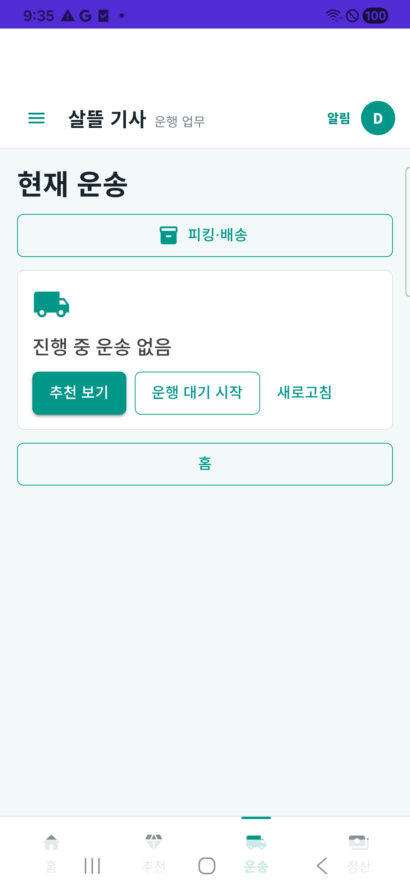

업무 오류 · 화면 복구
화주·기사의 안내 창과 화면 복귀를 확인하는 자료입니다.
현재 APK202 화면 9장과 이전 APK201 참고 화면 1장을 구분했습니다. 이미지 바이트는 바꾸지 않았습니다.
홈 복귀 화면의 기존 주황 입고 요약 경고는 남아 있습니다. 이번에 모든 화면의 안내를 바꾼 것은 아닙니다.
변경 전후


APK 201 · 2026-10-21T11:39:57.159Z

APK 202 · 2026-10-21T12:33:00.322Z화주 · 화면 복귀


APK 202 · 2026-10-21T12:33:03.351Z

APK 202 · 2026-10-21T12:34:01.739Z

APK 202 · 2026-10-21T12:34:04.678Z화주 · 연결 복구


APK 202 · 2026-10-21T12:34:18.886Z APK 202 · 2026-10-21T12:34:21.087Z
APK 202 · 2026-10-21T12:34:21.087Z
기사 · 화면 복귀


APK 202 · 2026-10-21T12:35:21.151Z

APK 202 · 2026-10-21T12:35:24.331Z